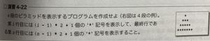
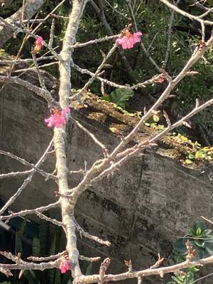

うるがいの話 ある日
最新: アルゴリズム【うるがいの話 ある日】とは 一日だけのプログです
『うるがいの話』の最新一日だけのプログで、通信料が少なく経済的だ。カニの画像をクリックすると全ての日付が載る『うるがいの話』サイトを表示します
|
|
【うるがいの話】 うるがい(ｳﾙｶﾞｲ urugai)とは、『もずくがに』の名前でとても大きくなります。 |
|---|---|
|
|
【カミマヤーの話】 猫のことを方言でマヤーといいます。カミマヤー（kamimayaa）とは、神の猫のことです。 |
|
【たながぁの音楽】 たながぁ（ﾀﾅｶﾞｰ tanagaa）とは手長えびのことで、何種類かあり大きいのは車 エビぐらいになります。 |

|
【ぶながぁの話】 ぶながぁ(ﾌﾞﾅｶﾞｰ bunagaa)とは、赤い髪の毛、赤い身体、そして身長は１ｍ２０ｃｍ ぐらい、川の蟹を食べているの目撃された。場所は沖縄県国頭郡大宜味村のと ある村僕の隣近所に住んでいる爺さんから、聞いた話です。 |
|
|
【ギーマの話】 ギーマ(giima)とは、山原の里山に咲くスズランに似た、 花を付けます。実は食べられます、 気が付くと口の周りが紫になっています。 |
2024年01月21日 (日）アルゴリズム
15:05
とある専門書の問題を解いていると、ん！、昔（１０年以上も前）、子供が大
学で出された演習問題であることに気が付く。

ホー、この本を教授は利用していたのだ。この本の演習問題の回答は、意地悪
なことに本でもネットでも見れないことになっている。あとにも先にも子供か
ら、宿題の手伝いをさせられたのこの一問だけ。その筋の私は、少し悩んだが
解いて上げた。いまなら、ＣｈａｔＧＰＴを利用すれば、どうなるか・・・。
やってみた
言語はＪａｖａです。
・キーボードから、整数の値ｎを入力します。
・第１行目には （ｉ － １） ＊ ２ ＋ １個の＇＊＇記号を表示して
最終行である第ｎ行目には （ｎ － １） ＊ ２ ＋ １個の＇＊＇記号
を表示するｎ段のピラミッドを表示するプログラムを教えてください。
import java.util.Scanner;
public class Pyramid {
public static void main(String[] args) {
// キーボードから整数nを入力
Scanner scanner = new Scanner(System.in);
System.out.print("整数nを入力してください: ");
int n = scanner.nextInt();
// ピラミッドを表示
for (int i = 1; i <= n; i++) {
// 左側の空白を表示
for (int j = 1; j <= n - i; j++) {
System.out.print(" ");
}
// '*'を表示
for (int k = 1; k <= (i - 1) * 2 + 1; k++) {
System.out.print("*");
}
// 改行
System.out.println();
}
// scannerを閉じる
scanner.close();
}
}
さすが、模範解答である。とある本の実践を、統合開発環境Eclipsで行って
いると、scannerが閉じられていませんとワーニングを出す。ＡＩでは、
『scannerを閉じる』のステップがある。ついでに、言語をcobolに替えたら
COBOLは行指向の言語であり、他の言語とは異なる構文を持っています。以
下は、COBOLで要求されたピラミッドを表示するプログラムの例です。
```cobol
IDENTIFICATION DIVISION.
PROGRAM-ID. PyramidProgram.
DATA DIVISION.
WORKING-STORAGE SECTION.
01 I-NUMBER PIC 9(3).
01 J-COUNTER PIC 9(3).
01 K-COUNTER PIC 9(3).
PROCEDURE DIVISION.
DISPLAY '整数nを入力してください: '.
ACCEPT I-NUMBER.
PERFORM VARYING J-COUNTER FROM 1 BY 1 UNTIL J-COUNTER > I-NUMBER
PERFORM VARYING K-COUNTER FROM 1 BY 1 UNTIL K-COUNTER <= (J-COUNTER - 1) * 2 + 1
DISPLAY '*'
END-PERFORM
DISPLAY SPACE(J-COUNTER) /* 左側のスペースを表示 */
END-PERFORM.
STOP RUN.
師匠も驚く時代になっている。今の大学生なら、普通にＡＩを利用しているの
だろうが、頭を悩まさなくても・・・。最後に、昨日開花宣言した桜の花をば。

１４時５４分 ビットコインの総資産 ￥１７、８７１（↓５）